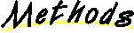

All Packages Class Hierarchy This Package Previous Next Index
Class structure.BinaryTree
java.lang.Object
|
+----structure.BinaryTree
- public class BinaryTree
- extends Object
A binary tree.
Every node refers to as many as two other nodes in the tree. Each
node, in addition, as at most one parent. The root node, is the
unique node with no parent.
Associated with the binary tree is a cursor. This reference points
to a current node within the tree, or it is null. When the tree
is first created it is empty, with a null cursor (there is nothing
to refer to). When a node is added, it is added at the location
indicated by the cursor. The cursor may be moved about with
the "move" methods. When the cursor "falls off" the tree at a current
leaf, a new value may be added at that location.
Standard pre-, post-, in-, and level-order traversals are provided.

 BinaryTree()
BinaryTree()
- Construct an empty binary tree.

 clear()
clear()
- Remove values from tree.
-
depth()
- Returns depth of node in tree.
-
elements()
- Returns an iterator that traverses tree in-order.
-
hasLeft()
- Check for left child.
-
hasParent()
- Checks for parent.
-
hasRight()
- Check for right child.
-
height()
- Returns height of node in tree.
-
inorderElements()
- Returns an iterator that traverses tree in-order.
-
insert(Object)
- Add a value to the tree.
-
isComplete()
- Detect a complete tree rooted at cursor.
-
isEmpty()
- Returns true iff tree has no data.
-
isFull()
- Detects a full tree rooted at cursor.
-
isLeftChild()
- Checks if cursor is a left child.
-
isRightChild()
- Checks if cursor is a right child.
-
moveLeft()
- Move cursor to left.
-
moveRight()
- Move cursor to right.
-
moveUp()
- Moves up the tree.
-
postorderElements()
- Returns post-order iterator.
-
preorderElements()
- Returns pre-order iterator.
-
remove()
- Remove value at cursor.
-
reset()
- Sets cursor to root of tree.
-
rotateLeft()
- Perform a left rotation about cursor.
-
rotateRight()
- Perform a right rotation about cursor.
-
setValue(Object)
- Change value of the node referred to by cursor.
-
size()
- The number of nodes in the tree.
-
toString()
- Constructs string representation of tree.
-
valid()
- Checks validity of cursor.
-
value()
- Return cursor's value.

 BinaryTree
BinaryTree
public BinaryTree()
- Construct an empty binary tree. The tree is empty, no root
exists, and the cursor is null.
- Postcondition:
- Creates an empty binary tree

 clear
clear
public void clear()
- Remove values from tree. The tree is made empty; all memory
associated with nodes is freed. Cursor is made null.
- Postcondition:
- Removes all nodes from tree
insert
public void insert(Object value)
- Add a value to the tree. The value is added to the location
suggested by the cursor. If the cursor and root are both null
value is added to the root of the currently empty tree. If root
is non-null, the value is added as the left child of the prior
node if the cursor became invalid by moving left from the prior
node. Otherwise it is made the right child of the prior node.
- Precondition:
- Cursor is null (invalid)
- Postcondition:
- If tree is empty, value is inserted at root, otherwise
value is inserted where cursor last moved off tree
- Parameters:
- value - The value to be added to the tree.
remove
public Object remove()
- Remove value at cursor. Node referenced by cursor should be a leaf.
The value at the cursor is removed
and the cursor is moved upward to parent, or becomes null
if cursor points to root.
- Precondition:
- Cursor is valid and has no children
- Postcondition:
- Leaf is removed, cursor is moved to parent, if any
- Returns:
- The value removed from tree.
value
public Object value()
- Return cursor's value. Provided the cursor is non-null,
this method returns the value stored in the referenced node.
- Precondition:
- Cursor valid
- Postcondition:
- Returns value of object at cursor
- Returns:
- The value associated with the cursor.
setValue
public void setValue(Object value)
- Change value of the node referred to by cursor.
- Precondition:
- Cursor valid
- Postcondition:
- Sets value found at cursor
- Parameters:
- value - The new value of the cursor-referenced node.
reset
public void reset()
- Sets cursor to root of tree. If no root exists, cursor
remains null.
- Postcondition:
- Moves the cursor to the root, if any
valid
public boolean valid()
- Checks validity of cursor. Cursor is valid if it is pointing
to an existing node of the tree.
- Postcondition:
- Returns true if the cursor points to a valid node.
- Returns:
- True iff the cursor refers to a node of the tree.
rotateLeft
public void rotateLeft()
- Perform a left rotation about cursor. The relation between
the cursor node and its right child are reversed. Left child
of right child becomes right child of cursor. Cursor becomes
left child of right child.
- Precondition:
- Cursor is valid, has right child
- Postcondition:
- Rotates the tree to left about cursor.
cursor points to new root of subtree
rotateRight
public void rotateRight()
- Perform a right rotation about cursor. The relation between
the cursor node and its left child are reversed. Right child
of left child becomes left child of cursor. Cursor becomes
right child of left child.
- Precondition:
- Cursor is valid, has left child
- Postcondition:
- Rotates the tree to left about cursor.
cursor points to new root of subtree
hasLeft
public boolean hasLeft()
- Check for left child. If cursor has left child, returns
true.
- Postcondition:
- Returns true iff cursor has left child
- Returns:
- True iff cursor has left child.
hasRight
public boolean hasRight()
- Check for right child. If cursor has right child, returns
true.
- Postcondition:
- Returns true iff cursor has right child
- Returns:
- True iff cursor has right child.
hasParent
public boolean hasParent()
- Checks for parent. Returns true if cursor has a parent node.
- Precondition:
- Cursor is valid
- Postcondition:
- Returns true iff cursor has parent
- Returns:
- True iff cursor has parent.
isLeftChild
public boolean isLeftChild()
- Checks if cursor is a left child. If cursor is left child of
its parent, returns true.
- Postcondition:
- Returns true if cursor has parent and is left child
- Returns:
- True iff cursor is left child of its parent.
isRightChild
public boolean isRightChild()
- Checks if cursor is a right child. If cursor is a right child of
its parent, returns true.
- Postcondition:
- Returns true if cursor has parent and is right child
- Returns:
- True iff cursor is a right child of its parent.
moveLeft
public void moveLeft()
- Move cursor to left. If cursor is valid, cursor refers
to left child of current node, or null, if none.
- Precondition:
- Cursor is valid
- Postcondition:
- Cursor moves to left child of pre-cursor, or off tree
moveRight
public void moveRight()
- Move cursor to right. If cursor is valid, cursor refers
to right child of current node, or null, if none.
- Precondition:
- Cursor is valid
- Postcondition:
- Cursor moves to right child of pre-cursor, or off tree
moveUp
public void moveUp()
- Moves up the tree. If cursor has parent, cursor points to parent.
Otherwise cursor becomes null.
- Precondition:
- Cursor is valid
- Postcondition:
- Cursor moves up to parent of pre-cursor.
height
public int height()
- Returns height of node in tree. Height is the maximum number of edges
between current node and any descendant.
- Postcondition:
- Returns height of cursor in tree
or -1 if tree is empty
- Returns:
- Height of node in tree.
depth
public int depth()
- Returns depth of node in tree. Depth is the number of edges
traversed in unique path to root.
- Postcondition:
- Returns depth of cursor in tree
or -1 if tree is empty
- Returns:
- Depth of cursor node in tree.
isFull
public boolean isFull()
- Detects a full tree rooted at cursor. A tree is full
if adding a node to the tree would increase its height.
- Postcondition:
- Returns true iff subtree rooted at cursor is full
- Returns:
- True iff adding a node to subtree requires increasing height.
isComplete
public boolean isComplete()
- Detect a complete tree rooted at cursor. A tree is complete
if it is minimum height and any "holes" in the tree appear only to
the right in last level.
- Postcondition:
- Returns true iff subtree rooted at cursor is complete
- Returns:
- True iff tree is complete.
isEmpty
public boolean isEmpty()
- Returns true iff tree has no data.
- Postcondition:
- Returns true iff tree is empty
- Returns:
- True iff tree has no data.
size
public int size()
- The number of nodes in the tree.
- Postcondition:
- Returns number of nodes in tree
- Returns:
- The number of nodes in the tree.
elements
public Iterator elements()
- Returns an iterator that traverses tree in-order.
- Postcondition:
- Returns inorder traversal of tree
- Returns:
- An Iterator for traversing tree in order.
inorderElements
public Iterator inorderElements()
- Returns an iterator that traverses tree in-order.
The root of a subtree is visited after all the nodes
of the left subtree, and before all the nodes of the
right subtree.
- Postcondition:
- Returns inorder traversal of tree
- Returns:
- An Iterator for traversing tree in order.
preorderElements
public Iterator preorderElements()
- Returns pre-order iterator. The iterator considers
the root of a subtree before any of its values.
- Postcondition:
- Returns preorder traversal of tree
- Returns:
- Iterator traversing tree in pre-order.
postorderElements
public Iterator postorderElements()
- Returns post-order iterator. The iterator considers
the root of a subtree after any of its values.
- Postcondition:
- Returns postorder traversal of tree
- Returns:
- Iterator traversing tree in post-order.
toString
public String toString()
- Constructs string representation of tree.
- Postcondition:
- Returns string representation of tree
- Returns:
- String describing tree.
- Overrides:
- toString in class Object
All Packages Class Hierarchy This Package Previous Next Index